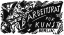

The Bauhaus Idea and Bauhaus Politics
|
Chapter 2. Time out of Joint
Full text
- 1 Iván T. Berend. válságos évtizedek (Critical Decades). Gondolat Kiadó, Budapest. 1982, p. 132.
- 2 Istvan Deak, Weimar Germany's Left-Wing Intellectuals: A Political History of the 'Weltbühne' Circ (...)
1THE FIRST WORLD WAR postponed dreams of progress and prosperity for all of society light-years away into the future. Germany lost the war in 1918, and after the November revolution the country was rid of the Kaiser and the institution of the Empire. The troops dispatched to put down the October revolt of the fleet in Kiel joined the mutineers, whereupon sailors' and workers' councils came to power. The revolution spread to the great port of Hamburg, followed by Hanover and Braunschweig; on 7 November the head of the Independent Socialist Party, Kurt Eisner, assumed leadership of the uprising in Munich, and in Berlin the steel workers organized a mass demonstration. On 9 November Friedrich Ebert, president of the Majority Socialist Party, became the new chancellor of the nation. On the same day Scheidemann, the party's other leader, announced the proclamation of the Republic in the presence of a vast crowd assembled in front of the Reichstag.1 Meanwhile the soldiers returning in closed ranks from the front, 'undefeated in battle', were greeted by exultant masses at the train terminals. The German High Command assured Ebert of the army's support. The Kaiser abdicated and left the country. 'It was a brief period of euphoria when ... the proclamation of the republic was generally celebrated.'2
2But the accord did not last for long: the left-wing radicals of the Independent Socialist Party, the Spartacists among them, demanded a Socialist republic, and meant to escalate the revolution into a dictatorship of the proletariat, which was opposed by the majority. In January 1919 a new revolutionary wave inundated Berlin, and the leftists demanded the resignation of the chief of police. In the meantime the right-wing Socialists were recruiting vigilantes known as Freikorps, using these to reoccupy the government buildings on 11 January, and to arrest the two most important revolutionary leaders, Rosa Luxemburg and Kart Liebknecht, who were then murdered 'while attempting to escape'. There seemed to be no end to the state of anarchy: the assassination of Kurt Eisner in Bavaria set off a new revolutionary movement that led to the proclamation of the Bavarian Soviet Republic on 7 April. This was suppressed after bloody massacres. Meanwhile in Berlin a new revolutionary upheaval left one thousand dead. The Majority Socialist Party, led by Chancellor Friedrich Ebert, now summoned a national constitutional assembly, which convened in Weimar from 19 January until the summer, evolving the constitution of the Weimar Republic, and opening a new era in German history.
- 3 György Lukács, 'A Tanácsköztársaság kultúrpofitikájárór (The Cultural Policy of the (Hungarian] So (...)
- 4 René Schickele. Der neunte November, Berlin, 1919; quoted by Deak, op. cit., p. 74.
3After the shock of the war, in the midst of the revolutionary events in Berlin, the artist-intelligentsia lived in a kind of narcosis composed of poverty and indulgence in unrealistic other-worldly dreams. Notions of a German renewal mingled with news of the Russian revolution and the illusions nourished by these. In the words of György Lukács, during these months 'there was a widespread belief that we were at the beginning of a vast revolutionary wave which would flood all of Europe within a few years. We laboured under the illusion that within a short time we would be able to mop up the last remnants of capitalism.'3 René Schickele expresses the general euphoria of the age, and a sense of the disjointed time: 'The new world has begun. It is here: mankind liberated! A face appears in the atmospheric maelstrom of anxiety and lies: the face of Man. The face of a creature bathed in heavenly light... At last he can begin his work. The Man. At last. . . Now! Let us begin afresh, freed from the burden of the Middle Ages. Let us create the Man of Modem Times. Forward!'4
4In the revolutionary centres the artists consolidated themselves into radical groups, associations and organizations. In the winter of 1918-19 the Arbeitsrat für Kunst (Work Council for the Arts) was formed in Berlin along the pattern of the workers' and soldiers' councils, providing artists and architects with a new forum for the evolution and propagation of the theories and aesthetics of the new art and architecture.
- 5 The members of the committee were: César Klein, Otto Bartning. Adolf Behne and Walter Gropius; lat (...)
5At the outset the Arbeitsrat was headed by a four-man committee with Gropius as one of the members. Later Bruno Taut became its president.5
- 6 Bruno Taut, 'Eine Notwendigkeit', Der Sturm 4, no. 196-7, February 1914, p. 175; quoted by Francis (...)
6Already in 1914 Taut had published a revolutionary appeal in Der Sturm: he was the first to describe the new mission of architecture in incandescently exalted Romantic tones. 'Let us build together a magnificent building! A building which will not be architecture alone, but in which everything - painting, sculpture, everything together - will create a grand architecture, and in which architecture will once again merge with the other arts. Architecture will here be frame and content all at once.'6
7In 1918 Gropius and Taut collaboratively composed the text of the Arbeitsrat manifesto, the 'Architecture Programme':
- 7 Taut, 'Architekturprogramm'; quoted by Isaacs (1991), op. cit.. p. 64.
8The building is the Immediate bearer of spiritual powers, creator of sensations. Only a total revolution of the spirit will create this building . . . The beginning of large People's Houses, not in the cities but on open land in conjunction with housing developments... These buildings... cannot stand in the city because it, rotten in Itself, will perish just as the old power. The future lies in the newly developed land, which will nourish itself.7
9The shock of the war, followed by the ecstatic events of revolutionary weeks - the 'time out of joint' - offered an exceptional vantage from where past and future appeared in a similar light, so that the deepest traditions of the German Middle Ages, that of the itinerant communities of builders, seemed just as relevant as the programme for building small housing units by mechanized processes in the future. A similar moment and special vantage point had also occurred in the history of the Russian avant-garde: around 1910-11 Mikhail Larionov, Natalia Goncharova and the young Malevich dipped into the oldest layers of Russian folk art tradition In a radically innovative gesture, with the motto, 'Our future is behind us!' Gropius arrived at similar conclusions - which must have been strongly influenced by the ideas of the Blaue Reiter circle about reunifying the arts - when, in his 1916 'Proposals', after a detailed exposition of how the proposed school would fit into the context of factory production, industry and commerce, he abruptly slipped the constraints of reality and turned to the past for his depiction of the future:
- 8 Gropius, 'Vorschläge zur Gründung einer Lehranstalt als künstlerische Beratungsgestelle für Indust (...)
We could again establish a prosperous working community similar to those medieval builders' workshops we so fondly long for, where architects, sculptors -all sorts of artisans belonging to many guilds - would coexist, autonomously accomplishing their portion of the common task. Imbued by the same spirit, full of understanding and respect for the unity of that single, common ideal whose meaning pervades them and fills their being.8
- 9 John Willet, The New Sobriety: Art and Politics in the Weimar Period 1917-1933. Thames and Hudson, (...)
10In the Arbeitsrat the architect Otto Bartning elaborated a plan for training in the arts and crafts. He proposed the abolition of professorships, and the restoration of the old master/apprentice relationship, with the renewed usage of these terms. This would clearly demarcate the new style of education from the conservative majority of society.9 The term 'conservative' referred to the bourgeois value system; in art it meant the Academy. To turn towards the Middle Ages was now an innovative, avant-garde gesture.
- 10 Franz Marc. 'Der Blaue Reiter' (text on the subscription prospectus printed in 1912); in Klaus Lan (...)
- 11 Cf. Erich Heckel, 'Crystalline Sun'. 1913; the Rayonist (in Russian, 'Luchist') works by Larionov (...)
11In 1918, when in the iridescent light of the historically disjointed times this vision of the potential and necessary synthesis of medieval German art - more precisely the Gothic style that had pervaded all media - and the new art linked to the making of a new world loomed up for Taut and Gropius, they were not introducing a new Idea into German culture. It was rather as If they were making way for the full onslaught of an artistic and intellectual current that had been present for decades in German cultural life. Wagner's notion of a Gesamtkunstwerk had at an earlier time stirred up the most far-reaching waves among the members of the Blaue Reiter group (who could 'hear the apocalyptic horsemen In the air').'10 Besides voicing their vision of the unification of the arts, they were also the most outspoken expositors of the transcendence of art beyond material realities, of art's responsibility to render the spiritual distillate, the dematerialized intellectual version of the material world. This idea, embodied as a formal motif, may be seen throughout the art of the period, and not only in Germany. Larionov and Goncharova in Russia, Robert Delaunay in France, Erich Heckel and Franz Marc in Germany - all undertook a new type of painterly representation of light itself. This type of painting, which dissolved and spiritualized forms, abolished the materiality of objects and focused on the optical refraction of light rays and their effective breaking up of objects, enabled the painter to create transcendental visions without relying on amateurish hallucinatory effects: after all, the artist was capturing an actual natural phenomenon, a certain optical effect. It was the painter's real-life observation of the way light rearranges and recreates the visual world; the artist merely heightened the effect by, as it were, interposing a virtual prism between the human eye and the natural object, and capturing the ensuing spectacle, broken into prismatic, crystalline sheaves of light on the canvas.11 This transcendence over and above reality aimed at nothing less than the birth of a new spirituality, a new religion.
- 12 Marc, 'The "Savages" of Germany'; in Lankheit (ed.). op. cit., p. 64.
- 13 Marc. 'Spiritual Treasures'; In Lankheit (ed.). op. cit., p. 59.
- 14 Marc, 'The "Savages" of Germany', op. cit., p. 64.
12These were the painters Franz Marc had in mind when he wrote, in 1912: 'Their thinking has a different aim: to create out of their work symbols for their own time, symbols that belong on the altars of a future spiritual religion, symbols behind which the technical heritage cannot be seen.'12 (Emphasis added.) This new spirituality was heading in precisely the opposite direction, away from Gropius, intending to unfold in a sphere set apart from technology, which it emphatically rejected, recognizing 'the beginning of a new epoch in painting ... the mystical Inner construction, which is the great problem of our generation.'13 'Mysticism was awakened in the souls and with it the most ancient elements of art.'14
- 15 Franciscono, op. cit., p. 102; see also Taut, 'Die Stadtkrone', Jena, 1919.
- 16 Gropius, Introduction to the catalogue of the Unknown Architects exhibition, Berlin, 1919: in Bauh (...)
13Among the architects Bruno Taut was the most receptive to this motif: almost contemporaneously with these paintings that depicted fragments of reality dissolved in crystalline light he designed 'The Artists' Glass Palace' for the 1914 Werkbund exhibition. Multicoloured glass panes on the building's prismatic dome reflected light in every direction so that the structure itself seemed to be dissolving in light. Taut rejected the notion of functionalism; his interest lay exclusively in sacral, symbolic buildings that were the earthly stand-ins for transcendent ideas; any other kind of edifice he considered to be necessary but distasteful.15 Among the architects Bruno Taut was the true man of the times; Gropius, affected by the times, came under the Influence of Taut, and it was mostly under this influence that he composed, in the 1919 catalogue to the 'Unknown Architects' exhibition in Berlin, what became one of the first versions of his later Bauhaus Manifesto, in which he calls architecture 'the crystallized expression of mankind's noblest thoughts'. In the second part of his text, however, he sounds a practical and realistic note: '[Let us have] a clear watershed between dream and reality, between aspiring to the stars and workaday life. Architects, sculptors, painters - all of us must return to craftsmanshipl'16
- 17 Gropius. Letter to Karl Emst Osthaus, Bertin, 6 January 1919; quoted by Isaacs, op. cit., p. 195.
14In December 1918 Gropius, who was proving to be the better organizer, was elected president of the Arbeitsrat to succeed Bruno Taut. Even In these troubled times, Gropius had precise strategic ideas. In one of his letters he wrote: 'The atmosphere at the Arbeitsrat is refreshingly radical, and we are indeed going to get some work done. I am certain that soon we shall present important proposals, and accomplish positive results. Given the current political situation, it is very important that our energies be not scattered, but should unite in one main stream. By now just about every radical artist and friend of the arts who is of any importance has joined us, and we surely represent a certain amount of clout.'17
15After his long quest, Gropius was glad to have found the task ready-made for his personality, where he could demonstrate how fundamentally he had come to revise his earlier, one-sidedly functionalist approach:
- 18 Gropius, Letter to his mother, Berlin, 31 March 1919; quoted by Isaacs, op. cit., p. 196.
The 'Arbeitsrat fur Kunst' gives me real joy. I have turned the whole thing upside down since I became chairman and have created a very interesting lively thing out of it... All Important modern artists, architects, painters, sculptors under one cover ... all come to the meetings and that is incredibly beautiful and animating ... This is the type of life I have always had in mind, but the cleansing effect of the war was necessary for it. The effect of all that inner suffering during the war has been to convert me from Saul to Paul. On my return home, psychically devastated by the horrors of the battlefield, I plunged Into intellectual life, and today I have the satisfaction of stating that in this relatively short amount of time I not only managed to stay afloat, but have actually conquered new territories. Today I know that this was only possible because deep down I have changed completely and have become attuned to the new things that are bursting forth with tremendous energy.18
- 19 Gropius, 'Stellungnahme des Bauhauses zu einer Eingabe des "Künstlerbundes Ostthüringen", die Bezi (...)
- 20 Members of the Novembergruppe included Lyonel Feininger, Gerhard Marcks. Otto Mueller. Erich Hecke (...)
16The war and the subsequent period of euphoria led for a brief time to the Illusion that the course of history had been turned about. At an earlier stage in his career Gropius had made a level-headed appraisal of the expectable consequences of technological growth, and turned his wholehearted attention as architect towards the expectable innovations promised by continuing technological advances. Subsequent events rendered this sober prewar architectural-engineering appraisal invalid; during the war, technology had revealed its destructive aspect. The apocalyptic spirit of the day now rechannelled Gropius's thinking. Muthesius and his theories had vanished from the horizon, along with the shattered German industry. Events had proved that material objects were perishable. 'Cultural values are the only goods our enemies cannot take away from us,' was the conclusion Gropius drew in September 1919.19 It was the other principle, that of art as opposed to technology, a world-view based on spiritual and intellectual foundations, That was to be elevated now above the debased flotsam and emotionalism of current events, to hold out a promise of renewal and purification. These were the hopes that filled the artists who, after the revolution of November 1918, founded the Novembergruppe, which offered radical practical proposals in addition to its Intellectual programme, by demanding the thoroughgoing reform of art academies, the establishment of museums of folk art, public exhibition spaces, and the allocation of art supplies to artists.20
- 21 'Manifest der Novembristen' (Entwurf); in Uwe M. Schneede (ed.). Die Zwanziger Jahre: Manifeste un (...)
17The Novembergruppe gathered a broader spectrum of artists than the Arbeitsrat, attracting, among others, writers, filmmakers, theatre people and musicians. It sponsored radio programmes and films along with other events. Brecht, Viking Eggeling, Walter Ruttmann and Erich Mendelsohn were members, as well as Klee, Kandinsky and Gropius. In the group's manifesto the words LIBERTY, EQUALITY, FRATERNITY appear in capital letters, as their motto for the creation of a 'young and free Germany'.21
18Given the broad spectrum of artistic organizations, the Arbeitsrat and the Novembergruppe evinced the most peaceful Intentions and the most constructive approach. All around them the Berlin of 1918-19 resounded with the clamour of Dadaist manifestos and proclamations, and the diverse manifestations of anarchist and radical artists' groups that were expressly anti-bourgeois and basically anti-art (since they held art to be a petit-bourgeois phenomenon). The proclamation, 'What Is Dadaism and What Does It Want in Germany?', signed by prominent Dadaists Raoul Hausmann, Richard Huelsenbeck and Jefim Golyscheff, announced the following programme:
- 22 'Was ist der Dadaismus und was will er in Deutschland?' 1919; in Schneede (ed.), op. cit., p. 26.
(1) The union of the creative and intellectual people of the world along the lines of a radical communism. (2) The introduction of growing unemployment as a consequence of thoroughgoing automation of all activities. Only unemployment can give a person the opportunity to ascertain the truth of life, and to get used to this experience. (3) The immediate expropriation of private property (nationalization); the communistic provisioning of everyone with food; the establishment of light- and garden-cities that teach people to be free.22
- 23 Raoul Hausmann, 'Der deutsche Spiesser ärgert sich', 1919: in Schneede (ed.), op. cit., p.29.
19The Dadaists regarded the Expressionists as one of their chief enemies, believing them to be catering to bourgeois tastes, and bombarding them with mercilessly scornful and stinging broadsides. 'Expressionism, that pseudo-theosophist-German tea party which goes so far as to recognize the East-Prussian Junkers, must of necessity leave us cold, ditto for Herr Walden's commercial manipulations; he, too, is just a typical German burgher who tries to conceal his transactions behind a pretentious veneer of Buddhism.'23 In a Berlin rife with ultimatums, jeers and court martials in the arts, and where every shade of modernism had its vociferous spokesman, Gropius and a few friends formed a sober and narrow circle which they named Gläseme Kette ('Glass Chain'), after Bruno Tout's designs of glass architecture. The central figure of this circle of friends, Bruno Taut, received the pseudonym Glass, because of his Glass House. Each member of the group had such a name that was used only intramurally; Adolf Behne. known for his loyalty, was dubbed Ekkehard (or Eckart, from 'ein getreuer Eckart', a loyal guard, faithful friend). Walter Gropius chose to go by the name of Mass (measure, proportion).
- 24 'Die gläserne Kette: Visionäre Architekturen aus dem Kreis um Bruno Taut 1919-1920'. Ausstellung i (...)
20Taut intended to guard the flame of higher spirituality in architecture, and to pass it on for the future, through this group. At a time of darkness and chaos he longed to work, and instead of indulging in the common complaints, he sought to establish a professional community during a period when no work was foreseeable for who knew how long. In his first circular of 19 December 1919 he writes, 'Let us consciously be "imaginary architects"! Away with individualism, let us climb higher, let architecture again occupy those heights where the Master is anonymous... Let us not inquire about the maker's identity but rejoice instead, that in the far distance, independent of us, the idea lives on.'24 Bruno Taut proposed that members of the Chain should, at frequent Intervals, prepare architectural plans, and send blueprints to every other member, so that they could mutually criticize and discuss each other's work.
21The correspondence went on for eleven months. The initial fervour was folowed by the gradual exhaustion of the faith and energies invested in the venture, casting the brief history of the Glass Chain In the light of an Overture to the grand opera in five acts known as the Bauhaus. Traces of the secret mutual admiration society, however, followed the members of the Chain in their careers. In letters to each other they continued to use their pseudonyms and, like members of a secret masonic lodge, they could count on the aid and confidential advice of their fellows in times to come.
Notes
1 Iván T. Berend. válságos évtizedek (Critical Decades). Gondolat Kiadó, Budapest. 1982, p. 132.
2 Istvan Deak, Weimar Germany's Left-Wing Intellectuals: A Political History of the 'Weltbühne' Circle. University of California Press. Berkeley and Los Angeles. 1968, pp. 73-4.
3 György Lukács, 'A Tanácsköztársaság kultúrpofitikájárór (The Cultural Policy of the (Hungarian] Soviet Republic); in Magyar wodalom. magyar kultúra, Magvetó' Kiadó, Budapest. 1970, p. 626.
4 René Schickele. Der neunte November, Berlin, 1919; quoted by Deak, op. cit., p. 74.
5 The members of the committee were: César Klein, Otto Bartning. Adolf Behne and Walter Gropius; later A. Behne became secretary and B. Taut, president. See Isaacs, op. cit., p. 195.
6 Bruno Taut, 'Eine Notwendigkeit', Der Sturm 4, no. 196-7, February 1914, p. 175; quoted by Franciscono. op. cit., pp. 91-2.
7 Taut, 'Architekturprogramm'; quoted by Isaacs (1991), op. cit.. p. 64.
8 Gropius, 'Vorschläge zur Gründung einer Lehranstalt als künstlerische Beratungsgestelle für Industrie, Gewerbe und Handwerk', January 1916; in Hüter, op. cit., p. 203.
9 John Willet, The New Sobriety: Art and Politics in the Weimar Period 1917-1933. Thames and Hudson, London. 1978, p. 45.
10 Franz Marc. 'Der Blaue Reiter' (text on the subscription prospectus printed in 1912); in Klaus Lankheit (ed.). The Blaue Reiter Almanac (documentary edition). The Viking Press. New York, 1974. p. 252.
11 Cf. Erich Heckel, 'Crystalline Sun'. 1913; the Rayonist (in Russian, 'Luchist') works by Larionov and Goncharova; the late paintings by Franz Marc, such as 'Rain', 1912. 'Tyrol'. 1913; the Orphist works by Robert and Sonia Detaunay; August Macke, 'Bathing Girls with Urban Background'. 1913, etc.
12 Marc, 'The "Savages" of Germany'; in Lankheit (ed.). op. cit., p. 64.
13 Marc. 'Spiritual Treasures'; In Lankheit (ed.). op. cit., p. 59.
14 Marc, 'The "Savages" of Germany', op. cit., p. 64.
15 Franciscono, op. cit., p. 102; see also Taut, 'Die Stadtkrone', Jena, 1919.
16 Gropius, Introduction to the catalogue of the Unknown Architects exhibition, Berlin, 1919: in Bauhaus - Idee - Form - Zweck - Zeit. Göppinger Galerie, Frankfurt am Main, 1964, p. 19.
17 Gropius. Letter to Karl Emst Osthaus, Bertin, 6 January 1919; quoted by Isaacs, op. cit., p. 195.
18 Gropius, Letter to his mother, Berlin, 31 March 1919; quoted by Isaacs, op. cit., p. 196.
19 Gropius, 'Stellungnahme des Bauhauses zu einer Eingabe des "Künstlerbundes Ostthüringen", die Beziehung zwischen Kunst und Staat betreffend', 26 September 1919; in Hüter, op. cit., p. 213.
20 Members of the Novembergruppe included Lyonel Feininger, Gerhard Marcks. Otto Mueller. Erich Heckel, Kart Schmidt-Rottluff, Christian Rohlfs, Otto Bartning, Hans Poelzig, Bruno Taut. On Gropius's membership, see Isaacs, op. cit., p. 197.
21 'Manifest der Novembristen' (Entwurf); in Uwe M. Schneede (ed.). Die Zwanziger Jahre: Manifeste und Dokumente deutscher Künstler. DuMont, Cologne, 1969. p. 92.
22 'Was ist der Dadaismus und was will er in Deutschland?' 1919; in Schneede (ed.), op. cit., p. 26.
23 Raoul Hausmann, 'Der deutsche Spiesser ärgert sich', 1919: in Schneede (ed.), op. cit., p.29.
24 'Die gläserne Kette: Visionäre Architekturen aus dem Kreis um Bruno Taut 1919-1920'. Ausstellung im Museum Leverkusen Schloss Morsbroick und in der Akademie der Künste Berlin, 1963. Catalogue.
List of illustrations
|  | |
|---|---|
| Caption | 1 Max Pechsteln (?): Illustration for an Arbeitsrat handbill |
| URL | http://books.openedition.org/ceup/docannexe/image/1165/img-1.jpg |
| File | image/jpeg, 395k |
© Central European University Press, 1995
Terms of use: http://www.openedition.org/6540

{kind=link}
{kind=link}